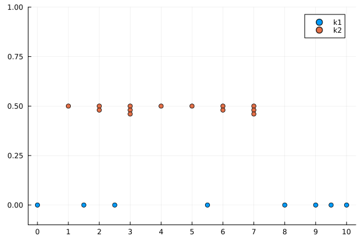
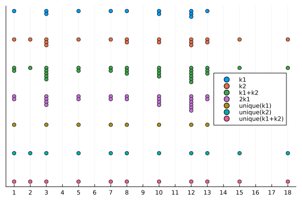

Knot vector
Setup
using BasicBSpline
using Plots; gr()Plots.GRBackend()Definition
A finite sequence
\[k = (k_1, \dots, k_l)\]
is called knot vector if the sequence is broad monotonic increase, i.e. $k_{i} \le k_{i+1}$.
There are four sutypes of AbstractKnotVector; KnotVector, UniformKnotVector, SubKnotVector, and EmptyKnotVector.
julia> subtypes(AbstractKnotVector)4-element Vector{Any}: EmptyKnotVector{T} where T<:Real KnotVector{T} where T<:Real SubKnotVector{T, S} where {T<:Real, S<:(SubArray{T, 1})} UniformKnotVector{T} where T<:Real
They can be constructed like this.
julia> KnotVector([1,2,3]) # `KnotVector` stores a vector with `Vector{<:Real}`KnotVector([1, 2, 3])julia> KnotVector(1:3)KnotVector([1, 2, 3])julia> UniformKnotVector(1:8) # `UniformKnotVector` stores a vector with `<:AbstractRange`UniformKnotVector(1:8)julia> UniformKnotVector(8:-1:3)UniformKnotVector(3:1:8)julia> view(KnotVector([1,2,3]), 2:3) # Efficient and lazy knot vector with `view`SubKnotVector([2, 3])julia> EmptyKnotVector() # Sometimes `EmptyKnotVector` is useful.EmptyKnotVector{Bool}()julia> EmptyKnotVector{Float64}()EmptyKnotVector{Float64}()
There is a useful string macro @knotvector_str that generates a KnotVector instance.
julia> knotvector"1231123"KnotVector([1, 2, 2, 3, 3, 3, 4, 5, 6, 6, 7, 7, 7])
A knot vector can be visualized with Plots.plot.
julia> k1 = KnotVector([0.0, 1.5, 2.5, 5.5, 8.0, 9.0, 9.5, 10.0])KnotVector([0.0, 1.5, 2.5, 5.5, 8.0, 9.0, 9.5, 10.0])julia> plot(k1; label="k1")Plot{Plots.GRBackend() n=1}julia> k2 = knotvector"1231123"KnotVector([1, 2, 2, 3, 3, 3, 4, 5, 6, 6, 7, 7, 7])julia> plot!(k2; label="k2", offset=0.5, ylims=(-0.1,1), xticks=0:10)Plot{Plots.GRBackend() n=2}

Operations for knot vectors
Setup and visualization
k1 = knotvector"1 2 1 11 2 31"
k2 = knotvector"113 1 12 2 32 1 1"
plot(k1; offset=-0.0, label="k1", xticks=1:18, yticks=nothing, legend=:right)
plot!(k2; offset=-0.2, label="k2")
plot!(k1+k2; offset=-0.4, label="k1+k2")
plot!(2k1; offset=-0.6, label="2k1")
plot!(unique(k1); offset=-0.8, label="unique(k1)")
plot!(unique(k2); offset=-1.0, label="unique(k2)")
plot!(unique(k1+k2); offset=-1.2, label="unique(k1+k2)")
Length of a knot vector
julia> length(k1)12julia> length(k2)18
Addition of knot vectors
Although a knot vector is not a vector in linear algebra, but we introduce additional operator $+$.
Base.:+(k1::KnotVector{T}, k2::KnotVector{T}) where T
julia> k1 + k2KnotVector([1, 1, 2, 3, 3, 3, 3, 3, 5, 5, 7, 7, 8, 8, 8, 10, 10, 10, 10, 12, 12, 12, 12, 12, 12, 13, 13, 13, 15, 18])
Note that the operator +(::KnotVector, ::KnotVector) is commutative. This is why we choose the $+$ sign. We also introduce product operator $\cdot$ for knot vector.
Multiplication of knot vectors
*(m::Integer, k::AbstractKnotVector)
julia> 2*k1KnotVector([1, 1, 3, 3, 3, 3, 5, 5, 7, 7, 8, 8, 10, 10, 10, 10, 12, 12, 12, 12, 12, 12, 13, 13])julia> 2*k2KnotVector([1, 1, 2, 2, 3, 3, 3, 3, 3, 3, 5, 5, 7, 7, 8, 8, 8, 8, 10, 10, 10, 10, 12, 12, 12, 12, 12, 12, 13, 13, 13, 13, 15, 15, 18, 18])
Generate a knot vector with unique elements
julia> unique(k1)KnotVector([1, 3, 5, 7, 8, 10, 12, 13])julia> unique(k2)KnotVector([1, 2, 3, 5, 7, 8, 10, 12, 13, 15, 18])
Inclusive relationship between knot vectors
Base.issubset(k::KnotVector, k′::KnotVector)
julia> unique(k1) ⊆ k1 ⊆ k2truejulia> k1 ⊆ k1truejulia> k2 ⊆ k1false
Count knots in a knot vector
countknots(k::AbstractKnotVector, t::Real)
julia> countknots(k1, 0.5)0julia> countknots(k1, 1.0)1julia> countknots(k1, 3.0)2